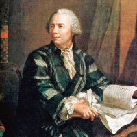

Daftar Isi
- Beranda
- Pythagoras
- Euclid
- Archimdes
- Leonardo Fibonacci
- Isaac Newton
- Leonhard Euler
- Carl Friedrich Gauss
- Georg Cantor
- Alan Turing
Hubungi Admin


JAM
lainnya
10 tokoh berpengaruh dalam matematika
Siapa itu Euler?

Sejarah Hidup:
Leonhard Euler (1707–1783) adalah seorang matematikawan Swiss yang dianggap sebagai salah satu matematikawan paling produktif dalam sejarah. Ia lahir di Basel, Swiss, dan menghabiskan sebagian besar hidupnya di berbagai negara Eropa, termasuk Rusia dan Jerman. Euler dikenal karena kontribusinya yang luas dalam berbagai cabang matematika.
Pemikiran:
Euler dikenal karena kepiawaiannya dalam mengintegrasikan berbagai cabang matematika dan mengembangkan metode-metode analitis yang kuat. Ia memiliki pemikiran yang sangat abstrak dan mampu menghubungkan konsep-konsep matematika yang tampaknya terpisah. Euler juga memiliki kemampuan untuk menyederhanakan masalah yang kompleks menjadi bentuk yang lebih terelihat dan dapat diatasi.
Karya:
Salah satu kontribusi paling terkenal dari Euler adalah pengembangan teori graf. Ia memperkenalkan konsep graf dan menjelajahi sifat-sifatnya dalam tulisannya "Solutio problematis ad geometriam situs pertinentis" pada tahun 1736, yang dianggap sebagai awal dari teori graf modern. Selain itu, Euler juga membuat rumus yang dikenal sebagai "rumus Euler" yang menghubungkan bilangan kompleks dengan trigonometri.
Euler juga berkontribusi dalam berbagai bidang matematika seperti analisis matematika, teori bilangan, dan geometri. Ia mengembangkan teori bilangan prima, membentuk dasar dalam teorema bilangan kompleks, dan menyusun "Institutiones calculi differentialis" dan "Institutiones calculi integralis," yang menjadi dasar kalkulus dalam bentuk modern.
Pengaruh dalam Matematika:
Pengaruh Euler dalam matematika sangat luas. Karya-karyanya membentuk dasar bagi berbagai bidang matematika modern, termasuk analisis matematika, teori graf, dan teori bilangan. Kontribusinya dalam mengembangkan rumus dan metode analitis telah mempengaruhi cara kita memahami dan memecahkan berbagai masalah matematika.
Euler juga mengembangkan notasi matematika yang lebih modern dan konvensi penulisan. Banyak notasi yang digunakan secara umum dalam matematika, seperti notasi fungsi dengan huruf f(x) dan penggunaan simbol Σ (sigma) untuk menjumlahkan rangkaian, berasal dari karya-karyanya.
Secara keseluruhan, Leonhard Euler adalah salah satu matematikawan paling berpengaruh dalam sejarah. Kontribusinya yang luas dan mendalam dalam berbagai cabang matematika telah membentuk dasar bagi perkembangan ilmu pengetahuan modern dan terus memengaruhi cara kita memahami dunia matematika.